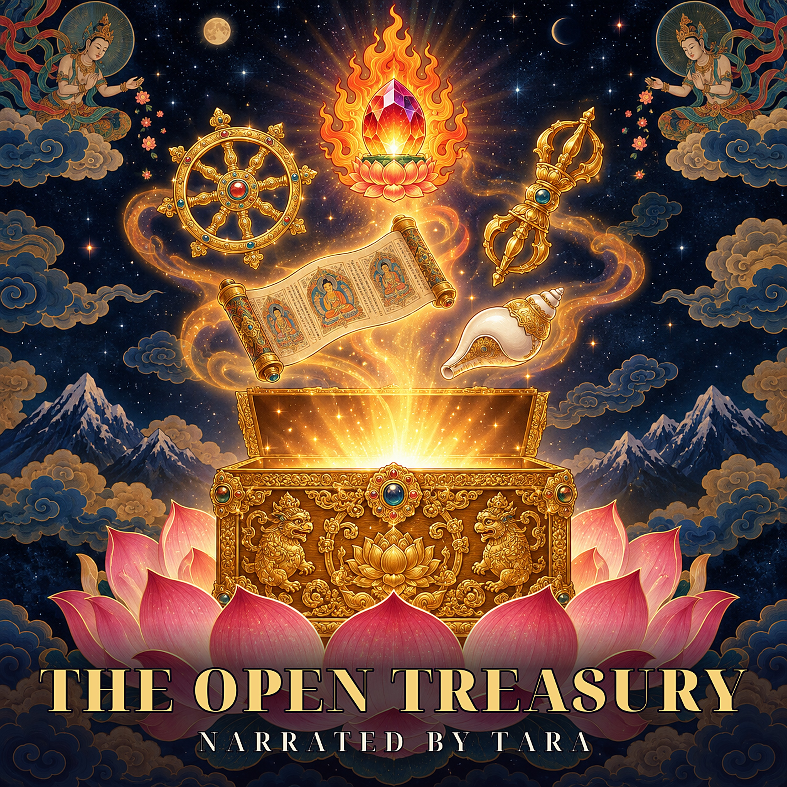

Garab Dorje: The First Hand (Corrected Source-Stacked Release)
A corrected, source-stacked course on Garab Dorje: the casket narrative, the three statements, and the different work done by Longchenpa, Mipham, Dudjom and Patrul. Biography, textual limits, wisdom and compassion stay in view.
New labeled release. The earlier First Hand episode remains unchanged. Traditional narrative, not independently verified modern biography; bounded textual study, not a definitive whole-corpus account or practice transmission.
Transmission context
One source is site-marked Restricted. This course stays with literary and nonprocedural doctrinal discussion. It is not empowerment, pointing-out instruction or a substitute for a qualified teacher.
Chapters
- 00:00 - A hand, a casket, a beginning
- 02:57 - The child the lineage remembers
- 08:21 - The grief that scholarship cannot replace
- 11:24 - A testament is not an autograph
- 14:13 - Recognition: not a new object on the shelf
- 18:20 - Decision: certainty is not stubbornness
- 21:50 - Confidence: when a thought appears
- 25:30 - What the three commentators do differently
- 29:08 - Mipham: compression with a warning
- 31:20 - Dudjom: three precisions
- 33:49 - Patrul: wisdom and love enter together
- 38:37 - Three statements, and another three
- 42:07 - Listening, reflection and the courage of the colophon
- 45:49 - The elephant and the library
- 46:54 - The casket keeps falling
- 49:31 - Two scholars, two journeys
- 52:42 - The honesty map
- 55:14 - The first hand, again
Sources and declared changes
Complete spoken script
Source, translator, quotation, rights and production notes
Rights and reuse
Lotsawa House English translations and adapted source-derived material: CC BY-NC 4.0, with translator credits and changes in the notes. Separately identifiable original commentary and narration: CC0. The complete package is not blanket CC0. CC BY-NC4.0 | CC0.
This episode is free, without advertising, paid access or support solicitation. Commercial reuse of source-derived material requires rights-holder permission.